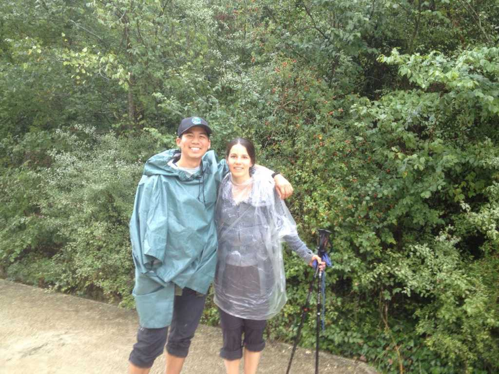

17: Goodbye, again
I arrive in Belgium late in the afternoon. The weather is exceptional: half-clouded skies with no reservation of sunlight, a perfect balance of cool and warm. I exit from the train station and hoist myself against a tall statue, eagerly looking for my squirrelly Belgium. 15 minutes pass before I spot her standing only 20 meters behind me, clad in a gray hoodie and a black leather jacket, lightly faded jeans and the tall leather boots of an amazon. Upon realizing that it was me looking at her, we sprint toward one another and embrace as if someone had just come home from war. It felt good to be in her arms again. Her radiating eyes still contained the ability to fully arrest my sensibilities.
We catch up over coffee at a nearby restaurant. She reflects on the difficulties of returning home, the growing tension between her and her parents, and the continued struggle of trying to find balance within her medical studies. I tell her about the rest of my time on the Camino – the magical moments, the people I met, reaching Santiago, the decision not to go further, saying goodbye. It feels surreal, the fact that I was in Belgium, staying with someone I had met on the Camino only weeks prior, the fact that I was there with Marieke.
I’m still confused about my feelings toward her. I believed I was in love, but something about it just didn’t feel right. Was it because we had met on the Camino? Would it have been too good to be true? Or did I simply get the impression that she wouldn’t love me back in the way I loved her? Was it really love? Or something else entirely?
I was walking on a thin wire, unsure of when I would fall.
Later we go to a park and continue our conversation. She mentions that Stepan had sent her a firey, passionate email admitting that he had fallen in love with her the moment they met. She seemed confused and a bit bewildered by the letter.
We often wondered why he decided to walk the Camino, a question he always deflected or never gave a straight answer for.
We brainstorm about what his motivations were for walking the Camino. Maybe he was a lost-soul searching for love; maybe he was just a normal guy struggling in life like everyone else, seeking solace in a foreign land. Maybe he did something unforgivable back in his home country. Whatever the case, the Camino had a way of connecting people despite the mysteries, sometimes because of them. On the Camino, the past wasn’t as important as the fact that we were simply there, walking together, sharing our common humanity, sharing a love of the road.
Eventually, our conversation transpires toward the topic of us – me and her – and she mentions something I will never forget: “You know, back on the Camino, I could have fallen in love with you. I wanted to. We grew so close so quickly, and it scared me a little. But I couldn’t. It would have changed the reasons for why we were there.” It was strange to talk so openly about us like this, but I reply that I understand and felt the same way. Though a different dialogue was playing in my head: Yes, love does change people, but that’s precisely what makes it so beautiful. Wasn’t the Camino about embracing all that comes your way?
We’re in her room, listening to Leonard Cohen. The question still lingers: do I love her? Does she love me? I won’t know until we talk about it. I won’t know until it’s out in the open.
I’m afraid. What if I jeopardize what we already have? No, we’re different. We can talk about anything and everything.
My gut feels like a block of lead is hanging from it. My heart is beating faster and faster. It wants to hide. To run. To fly away. To breathe.
Still I don’t know what to make of it, how to admit how I felt. I wasn’t even sure of what I was feeling.
A brittle piece of glass is standing on its corner at the edge of a table. Any amount of tumult or movement will tip it over. In the distance, a storm with the power to break trees, and men, is coming.
A fire begins to kindle, and I turn toward Marieke. She looks straight at me. Through me. Inaudible words enter the air. Time collapses.
“I think I’m in love with you.”
Silence.
Emptiness.
A messy knot of shoestrings.
A moment between moments.
Words.
“Phil, I have never met anyone like you before.
What we have, I have never had it with anyone.
You are so special to me…
I wish I could fall in love with you.
Your love has no bounds.
Your love is so pure.
You––”
Something falls. A tiny piece of glass is shattering into a thousand tiny fractals. Time begins to sweep them into the pan of reality. A naked thread remains, the voice of Leonard Cohen echoes in the nearby distance:
Your letters they all say that you’re beside me now. Then why do I feel alone? I’m standing on a ledge and your fine spider web is fastening my ankle to a stone.
Now so long, Marianne, it’s time that we began To laugh and cry and cry and laugh about it all again.
The next day, Marieke and I go to an African church service. I feel numb but put on a front. We sing with the choir and listen to a genial priest preach about love, forgiveness, redemption. I hear nothing. What the hell do you know about love? We eat, drink, chat, and walk around. Things go on as planned.
Then we’re in the train station. A young, affectionate couple is sitting near us. They’re utterly in love, grossly enmeshed and atop one another. Time halts once again.
Anger. Sadness. Disappointment.
No. I can’t be angry, sad, disappointed.
To be in love, to have fallen in love, to have been heartbroken. That, in a way, is a gift.
Am I rationalizing my pain? I don’t know. It doesn’t matter.
We embrace one last time and say our goodbyes. I board the train and take one last look at her through the cloudy window. She looks back. I wave and turn inwards. A tear begins to creep down my cheek. I close my eyes.
I guess this is it then.
The engine whirs to life, and slowly, slowly, I am taken by the arms of an unknown future. The distance between dream and reality begins to grow, and I am pulled against my will toward the latter.
Somewhere else in the world, the sun continues to shine.
My Final Letter: October 15th, 2017
I have to say that, as I sit here in the airport, I am feeling heartbroken. It’s not your fault; it’s no ones. It’s simply the nature of love. Initially, I felt numb because I was denying the fact that I was in love. It was one of the purest truths I have ever fought, because I didn’t want to get hurt; I didn’t want to jeopardize our friendship; I didn’t want to accept that maybe it just wasn’t right. And maybe all of my fears and insecurities are false, and the reason for why I feel what I do now is completely different. I may never know why, but it really doesn’t matter – it wasn’t meant to be. So I have to accept it – I will accept it. And in the process, I am letting the soft animal of my body feel what it feels, and love what it loves (Mary Oliver is on my mind as I write this to you).
And I will get back up stronger, more able to give love, more able to receive it, every day from this point on. I don’t think we ever know when we are ready for love, but that should not stop us from trying. Because that is what the truest form of love is. That is the only way we know it’s real. By trying. By loving. By getting hurt, and, if you’re one of the lucky ones, doing it all over again – maybe with a little less hurt each time. Maybe.
M, know that you are so special, so able to receive, and give love. Don’t ever let anyone else tell you otherwise, including, especially, You.
I remember the day when you told me that you had never felt love before. That was on day 4 of our Camino. I then made a promise to myself to show you how it feels. I don’t know if I have been successful. But what I believe is, what we had, that was love. It’s possible. It’s real. Hang onto it. Carry it with you. Give it to someone else who will love you back.
Please don’t blame yourself for the way I currently feel – I’ll be fine. I tell you this because you have been my best friend, you have taught me so much about life. Truly, I cannot fathom the depth of our relationship, and I cannot begin to express how thankful I am. I am tearing up as I write this, out of such joy and gratitude. This letter, I suppose, will mark the end of my Camino. It has taught me the final lesson I needed to learn: what it means to love. -P
